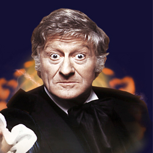

| Home | The Doctors | The Companions | The Villains |
| [banner] | |||
| cf
The Third Doctor The Third Doctor is an incarnation of the Doctor, the protagonist of the BBC science fiction television series Doctor Who. He was portrayed by actor Jon Pertwee. Within the series' narrative, the Doctor is a centuries-old Time Lord alien from the planet Gallifrey who travels in time and space in his TARDIS, frequently with companions. When the Doctor is critically injured, his body can regenerate; as a result, his physical appearance and personality change. Pertwee portrays the third such incarnation, a dapper man of action of stark contrast to his wily but less action-oriented predecessors. While previous Doctors' stories had all involved time and space travel, for production reasons Pertwee's stories initially depicted the Doctor stranded on Earth, where he worked as a scientific advisor to the international military group UNIT. His adventures often fitted into the spy-fi genre which had been popularised by The Avengers the decade prior. Within the story, the Third Doctor came into existence as part of a punishment from his own race, the Time Lords, who forced him to regenerate and also disabled his TARDIS. Eventually, this restriction is lifted and the Third Doctor embarks on more traditional time travel and space exploration stories. His initial companion is UNIT scientist Liz Shaw (Caroline John), who unceremoniously leaves the Doctor's company between episodes to be replaced by the more wide-eyed Jo Grant (Katy Manning), who then continues to accompany the Doctor after he regains use of his TARDIS. His final companion was intrepid journalist Sarah Jane Smith (Elisabeth Sladen), who would go on to become the Doctor's longest-serving companion. As part of his sentence from the Time Lords, the Doctor was forced to begin his exile on earth with a new face. The Third Doctor was confident, bold and brash, but with a soft paternal side, reserved for those he cared about. While exiled he became allied to the extraterrestrial taskforce UNIT and helped them combat living plastic Autons, Sea Devils and polluted giant green maggots, as well as fellow renegade Time Lord, The Master. Eventually he was allowed to travel again, and on one such trip received a fatal dose of radiation, prompting him to regenerate. |